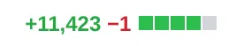

Tracking Lockfiles With git-lfs
We’ve all seen one of these:

On closer inspection it’s revealed that the pull request is a simple dependency
update and most of the changes are in a lockfile (e.g. package-lock.json).
This can be a nuisance when pull requests are filtered and tagged by size and can result in simple PR reviews being deferred because of a deceptively large number of changes.
By tracking with git-lfs lockfile changes can be condensed to a single line.
Caveats
Changes to files tracked with git-lfs won’t be displayed line-by-line in pull
requests, which is incompatible with a strict manual dependency auditing
process.
Also note that git checkout in your CI/CD pipeline may not fetch LFS files by
default. For example GitHub actions needs to be configured as follows:
- uses: actions/checkout@master
with:
lfs: true